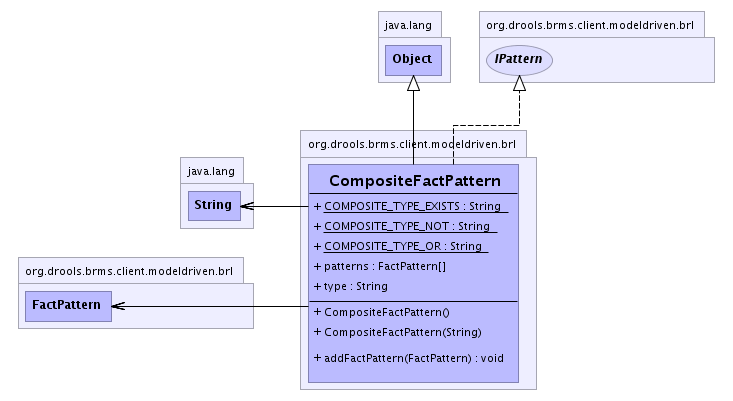

org.drools.brms.client.modeldriven.brl
Class CompositeFactPattern
java.lang.Object
 org.drools.brms.client.modeldriven.brl.CompositeFactPattern
org.drools.brms.client.modeldriven.brl.CompositeFactPattern
- All Implemented Interfaces:
- IPattern, PortableObject
public class CompositeFactPattern
- extends java.lang.Object
- implements IPattern
Represents first order logic like Or, Not, Exists.
-
- 
| Methods inherited from class java.lang.Object |
clone, equals, finalize, getClass, hashCode, notify, notifyAll, toString, wait, wait, wait |
COMPOSITE_TYPE_NOT
public static final java.lang.String COMPOSITE_TYPE_NOT
- See Also:
- Constant Field Values
COMPOSITE_TYPE_EXISTS
public static final java.lang.String COMPOSITE_TYPE_EXISTS
- See Also:
- Constant Field Values
COMPOSITE_TYPE_OR
public static final java.lang.String COMPOSITE_TYPE_OR
- See Also:
- Constant Field Values
type
public java.lang.String type
- this will one of: [Not, Exist, Or]
patterns
public FactPattern[] patterns
- The patterns.
CompositeFactPattern
public CompositeFactPattern(java.lang.String type)
- This type should be from the contants in this class of course.
CompositeFactPattern
public CompositeFactPattern()
addFactPattern
public void addFactPattern(FactPattern pat)